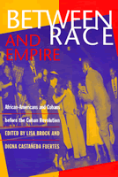

The relationship between the two peoples of color, their similar experiences with slavery and reaching for political power, and their parallel race consciousness
The relationship between the two peoples of color, their similar experiences with slavery and reaching for political power, and their parallel race consciousness


 The relationship between the two peoples of color, their similar experiences with slavery and reaching for political power, and their parallel race consciousness
The relationship between the two peoples of color, their similar experiences with slavery and reaching for political power, and their parallel race consciousness

|  |
Between Race and EmpireAfrican-Americans and Cubans before the Cuban Revolutionedited by Lisa Brock and Digna Casteñada Fuertes, foreword by Manning Marablepaper EAN: 978-1-56639-587-8 (ISBN: 1-56639-587-9) |
"...delves into topics such as religion and protest poetry. Layers of history are peeled back, building an understanding of political and racial dynamics between the darker citizens of the United States and Cuba."
—Emerge Magazine
For many black Americans, the prominence and success of black Cubans in early efforts for independence and abolition highlighted a sense of racial identity and pride, while after U.S. intervention the suppression of Afro-Cuban aspirations created a strong interest among African-Americans concerning Cuban affairs. This collection, edited by a black Cuban and a black American, traces the relations between Cubans and African-Americans from the abolitionist era to the Cuban Revolution of 1959.
The eleven essays gathered here, written by scholars from both countries, heighten our appreciation of African-Americans as international actors and challenges the notion that Cubans had little or no race consciousness. This is the first study of the world capitalist system to track the international consciousness of working peoples, peoples of color, and women. With a focus on two sets of peoples not in state power, Between Race and Empire expands our understanding of "history from below," and reflects current trends in Pan-Africanist and African Diaspora studies by tracing a little-studied linkage between two peoples of African descent.
Excerpt available at www.temple.edu/tempress
"When I was young my grandmother played the numbers. She consulted dream books to enumerate her night visions and counting books to calculate their odds. She would work up sequences of numbers and list them in long single columns. With the concentration of a statistician and using a math that was clearly beyond my reach, she would add, subtract, and formulate new combinations of figures. At the moment in which it was right, the number would reveal itself to her and she would quietly say, 'That's it; that's the number that is surely going to hit.' And it often did.
"I wish I had my grandmother's ability to divine what was hidden in the future. I might have foreseen the academic and ideological challenges that preparing an anthology on Cuba and African-Americans would entail. I might have realized that the centering of two peoples not in state power across nation-state boundaries would come to feel like a mountain-moving task, that gathering the contributors to unravel the threads of this connected historical sage would be difficult. Layers of racism and imperialism have marginalized both sets of peoples, not only in their own societies and in the region but also within their academics. In addition, conventional Western scholarship has been bound by the questions and contexts of nation-states. It was difficult, then to locate Cuban and North American intellectuals willing and able to break away from their traditional national moorings.
—From the Introduction
"The contributors to this excellent study have uncovered a rich legacy of two peoples who not only fought racism and imperialism but also interacted in the process."
—Hispanic Magazine
"The rich and complex relationship between Afro-Americans and Afro-Cubans is the theme of the eleven essays gathered in this charming volume. The strength of this anthology is that it explores this relationship from 'below.' The essays focus on music, poetry, literature, and sports as the means which two peoples of color were able to express their uniqueness and develop their parallel race consciousness."
—Ethnic Conflict: Research Digest
Acknowledgments
Introduction: Between Race and Empire – Lisa Brock
1. Minerva: A Magazine for Women (and Men) of Color – Carmen Montejo Arrechea
2. Telling Silences and Making Community: Afro-Cubans and African-Americans in Ybor City and Tampa, 1899-1915 – Nancy Raquel Mirabal
3. The African-American Press and United States Involvement in Cuba, 1902-1912 – David J. Hellwig
4. Encounters in the African Atlantic World: The African Methodist Episcopal Church in Cuba – Jualynne E. Dodson
5. Cuba's Roaring Twenties: Race Consciousness and the Column "Ideales de una Raza" – Rosalie Schwartz
6. Marcus Garvey in Cuba: Urrutia, Cubans, and Black Nationalism – Thomás Fernández Robaina
7. Nicolás Guillén and Langston Hughes: Convergences and Divergences – Keith Ellis
8. Not Just Black: African-Americans, Cubans, and Baseball – Lisa Brock and Bijan Bayne
9. Cuban Social Poetry and the Struggle against Two Racisms – Carmen Gómez García
10. CuBop! Afro-Cuban Music and Mid-Twentieth-Century American Culture – Geoffrey Jacques
11. The African-American Press Greets the Cuban Revolution – Van Gosse
Epilogue – Digna Castañeda Fuertes
About the Editors and Contributors
Index
Lisa Brock is Associate Professor of African History and Diaspora Studies, Department of Liberal Arts, School of the Art Institute of Chicago.
Digna Castañeda Fuertes is Senior Professor of Caribbean History and Senior Advisor for graduate diplomas in History, University of Havana, Cuba.
Latin American/Caribbean Studies
African American Studies
© 2015 Temple University. All Rights Reserved. This page: http://www.temple.edu/tempress/titles/1308_reg.html.